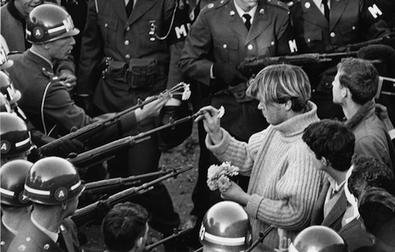

Flower Power
Bernie Boston · 21 October 1967 · Photograph, black and white
In copyright. Look and learn: shown for study, not for download.
Bernie Boston was covering the March on the Pentagon of 21 October 1967 for The Washington Evening Star, sitting on a wall at the mall entrance, when a young man came out of the crowd and began putting carnations into the barrels of the soldiers' rifles. His editor did not see the importance of the picture and ran it on a page deep inside the paper. It became known only after Boston entered it in photography competitions. The demonstrator is most commonly identified as George Harris, an eighteen-year-old actor.